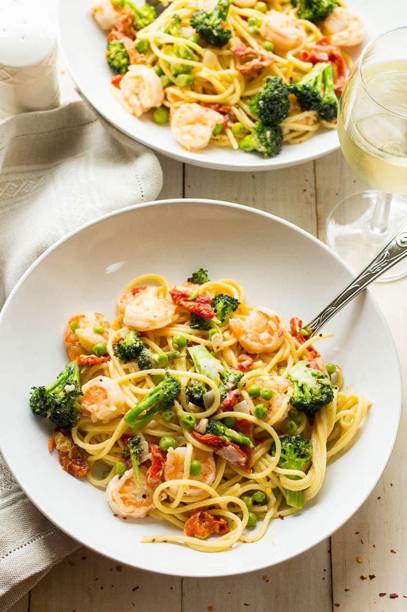

Shrimp & Pasta Primavera

Shrimp and vebetables with pasta
Wonderful seafood pasta dish for those seafood-lovers.
Simple to make for a fairly quick dinner.
This recipe is also versitile,
if you want to use different vegetables have fun!
Probably not the healthiest recipe though.
Ingredients:
- Dillweed
- Garlic
- Minced onions
- Salt & pepper
- Dried thyme
- 8 ounces Linguine
- 1 pound Shrimp
- 4 cups or less of vegetables
- 1 cup Heavey cream
- 3/4 cup Chicken broth
- 1/2 cup Parmesan cheese
- 2 tablespoons Butter
Steps:
- Cook pasta in large sauce pan
- Add cooked shrimp and vegetables for the last 3-4 minutes
- Drain well
- Mix remaining ingredients in sauce pan
- Bring to boil, stirring constantly with whisk
- Reduce heat and simmer for 5 minutes
- Add pasta, shrimp and veggies and toss gently to coat